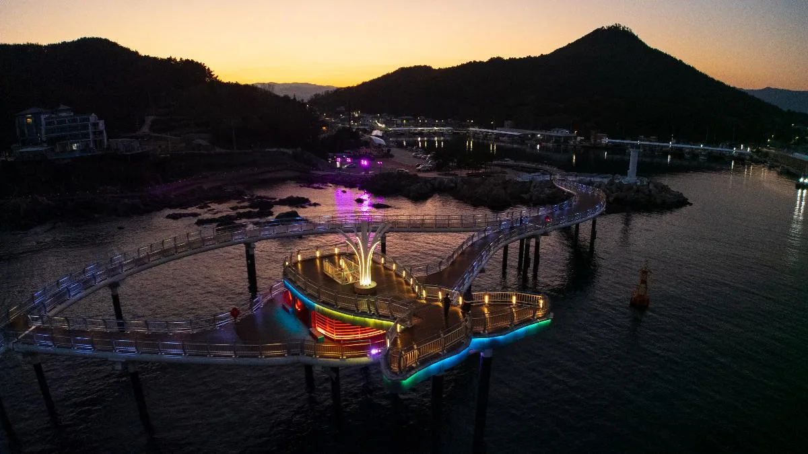
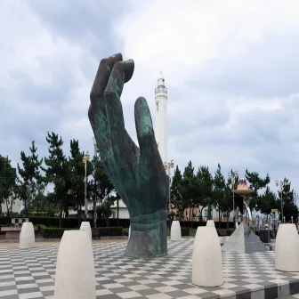
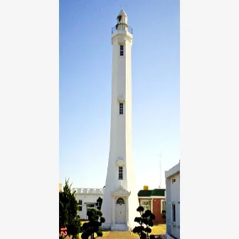

▲ 영덕풍력발전단지. 블루로드 A코스가 고불봉을 넘어 이 능선을 지난다 ⓒ 영덕군 관광포털
1. 블루로드, 4개 코스 64.6km
영덕 블루로드는 A부터 D까지 4개 코스로 나뉩니다. A코스 '빛과 바람의 길'이 17.5km, B코스 '푸른 대게의 길'이 15.5km, C코스 '목은 사색의 길'이 17.5km, D코스 '쪽빛 파도의 길'이 14.1km로, 전체를 합치면 64.6km입니다. 부산에서 강원 고성까지 이어지는 해파랑길 770km의 일부이기도 합니다.
이 중 A코스가 가장 많이 알려져 있습니다. 강구터미널에서 강구항을 지나 산길로 접어들어 고불봉을 넘고, 영덕풍력발전단지를 지나 해맞이공원까지 이어집니다. 대부분이 산길이라 해안 코스를 기대하고 갔다가 의외로 오르막이 길다고 느끼는 경우가 있습니다.
2. 풍력발전단지, 능선 자체가 볼거리다
영덕풍력발전단지는 해안 능선을 따라 대형 풍력 발전기가 줄지어 선 곳입니다. A코스 트레킹 중간에 지나가는 구간이지만, 차로도 인근 도로까지 접근할 수 있어 굳이 완주하지 않아도 능선 풍경을 볼 수 있습니다.
바다와 능선이 함께 보이는 지형이라 사진 명소로도 알려져 있습니다. 다만 바람이 강한 지역 특성상 방문 시 체감 기온이 낮을 수 있어 겉옷을 챙기는 편이 낫습니다.
3. 영덕에서 호미곶으로, 해안도로를 타고 남쪽으로
블루로드 남쪽 끝에서 해안도로를 따라 계속 내려가면 포항 호미곶에 닿습니다. 강구항과 호미곶은 같은 동해안 라인에 있어, 7번 국도와 해안도로를 번갈아 타면서 이동하는 구간 자체가 드라이브 코스가 됩니다.

▲ 영덕 해안 전망 데크. 낮과 밤의 풍경이 확연히 다른 구간이 많다 ⓒ 영덕군 관광포털
4. 호미곶 — 손 두 개는 무료다
호미곶 해맞이광장의 상생의 손은 입장료도 주차비도 없습니다. 바다 쪽에 있는 오른손은 높이 8.5m, 무게 18톤이고, 광장 쪽 육지에 있는 왼손은 높이 5.5m, 무게 13톤입니다. 두 손이 마주 보는 구도가 상징입니다.

▲ 상생의 손. 왼쪽 육지 손과 오른쪽 바다 손이 마주 보는 구조다 ⓒ 포항시 문화관광
옆에 있는 국립등대박물관도 무료입니다. 운영 시간은 오전 9시부터 오후 6시까지이고, 월요일은 휴관입니다.

▲ 호미곶 등대. 옆 국립등대박물관은 입장료가 없다 ⓒ 포항시 문화관광
5. 새천년기념관 전망대는 유료다
광장 뒤편 새천년기념관은 무료가 아닙니다. 5층 전망대에 올라가려면 성인 3,000원, 청소년·군인 1,000원, 어린이 500원을 내야 합니다.
| 구분 | 일반 | 포항시민 |
|---|---|---|
| 성인 | 3,000원 | 2,000원 |
| 청소년 · 군인 | 1,000원 | 무료 |
| 어린이 | 500원 | 무료 |
포항시민은 청소년과 어린이가 무료입니다. 전망대에서는 호미곶 광장 전체와 상생의 손을 위에서 내려다볼 수 있어, 광장에서 찍은 사진과는 다른 구도를 원한다면 올라갈 만합니다.
6. 자차 여행자를 위한 정리
첫째, 블루로드를 완주할 필요는 없습니다. A코스 중 풍력발전단지 인근만 차로 접근해도 대표 풍경은 볼 수 있습니다.
둘째, 호미곶 광장과 등대박물관은 예산 걱정 없이 둘러봐도 됩니다. 둘 다 무료입니다.
셋째, 전망대까지 올라가려면 새천년기념관 입장료를 따로 챙기십시오. 광장에서는 무료였다는 생각으로 그냥 올라가면 매표소에서 당황할 수 있습니다.
넷째, 영덕에서 호미곶까지는 해안도로 자체가 코스입니다. 목적지만 보고 고속도로로 질러가기보다, 시간 여유가 있다면 국도·해안도로 구간을 살려서 이동하는 편이 낫습니다.
정리하면 이렇습니다. 영덕과 호미곶 모두 큰 틀에서는 돈이 많이 드는 여행지가 아닙니다. 다만 '전부 무료'라고 넘겨짚으면 새천년기념관 매표소에서 한 번은 계산이 어긋납니다.